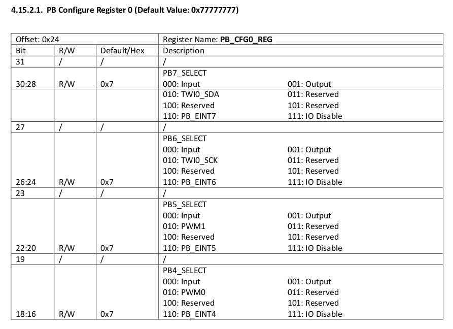
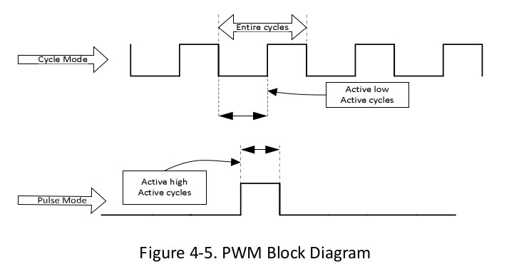
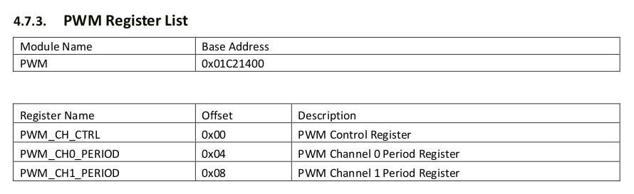
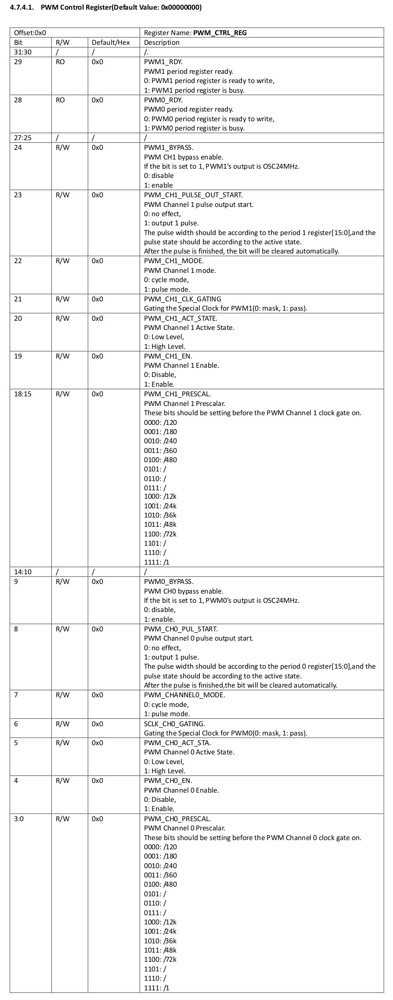
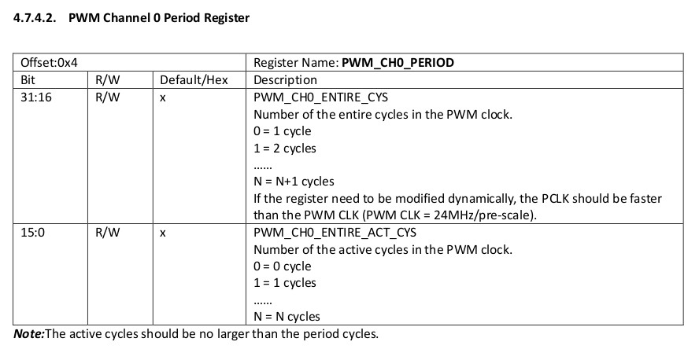
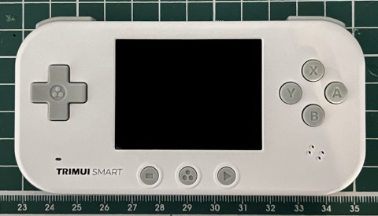
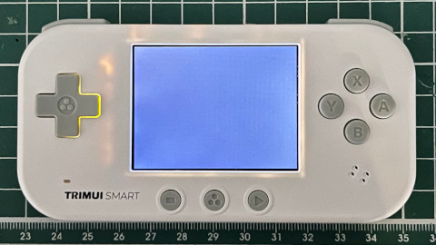

參考資訊：
https://github.com/steward-fu/website/releases/download/datasheet/allwinner_s3_rm.pdf
PWM0位於PB4





.global _start
.equ PWM_BASE, 0x01c21400
.equ GPIO_BASE, 0x01c20800
.equ PB_CFG0, (GPIO_BASE + (0x24 * 1) + 0x00)
.equ PWM_CH_CTRL, 0x00
.equ PWM_CH0_PERIOD, 0x04
.arm
.text
_start:
.long 0xea000016
.byte 'e', 'G', 'O', 'N', '.', 'B', 'T', '0'
.long 0, __spl_size
.byte 'S', 'P', 'L', 2
.long 0, 0
.long 0, 0, 0, 0, 0, 0, 0, 0
.long 0, 0, 0, 0, 0, 0, 0, 0
_vector:
b reset
b .
b .
b .
b .
b .
b .
b .
reset:
ldr r0, =PB_CFG0
ldr r1, =0x20000
str r1, [r0]
ldr r0, =PWM_BASE
ldr r1, =(1 << 4) | (12 << 0)
str r1, [r0, #PWM_CH_CTRL]
ldr r1, =(1 << 6) | (1 << 4) | (12 << 0)
str r1, [r0, #PWM_CH_CTRL]
ldr r1, =(666 << 16) | (333 << 0)
str r1, [r0, #PWM_CH0_PERIOD]
0:
nop
b 0b
.end
完成

